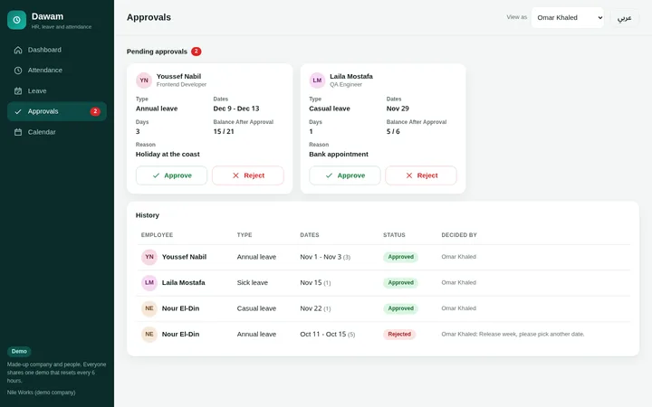
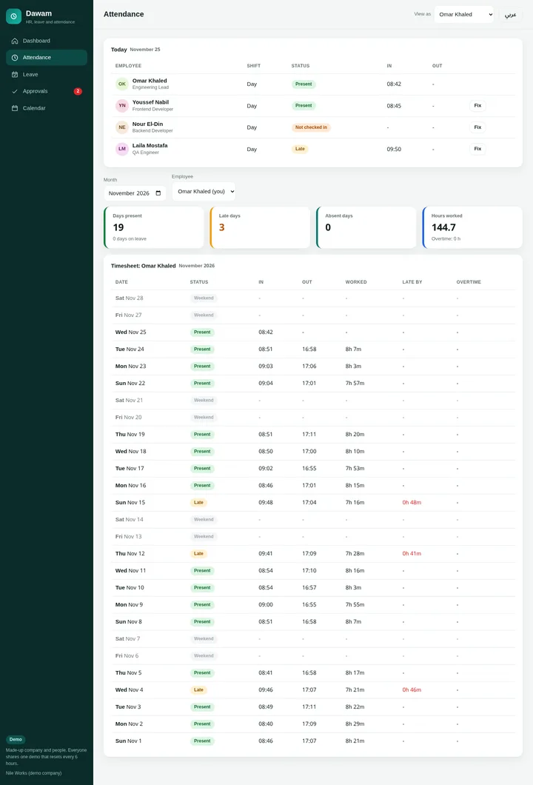
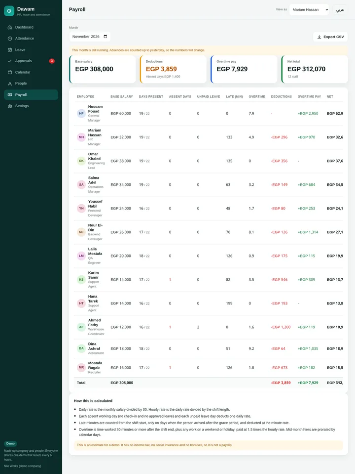
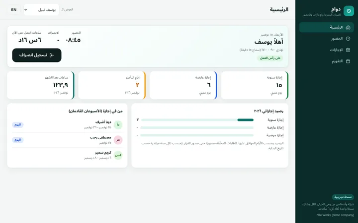
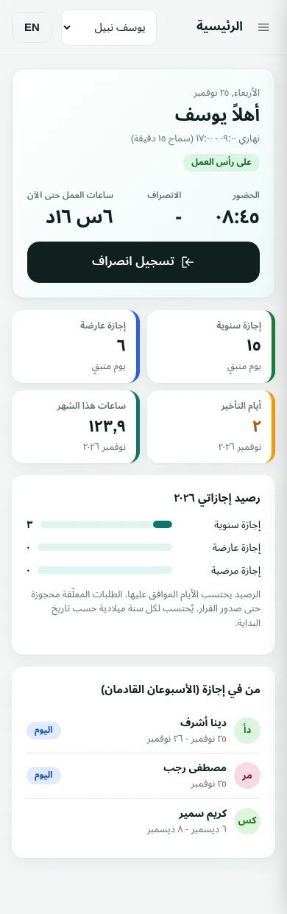

PORTFOLIO DEMO / BUILT / LIVE DEMO
Dawam
Leave, attendance and people. In one place.
 ACTUAL BUILD
ACTUAL BUILDDawam · HR admin dashboard. Made-up company and people.
The problem
A small company tracks leave in WhatsApp messages and attendance in a notebook. Nobody is sure who is out next week, balances are guesses, and month-end pay means counting days by hand.
What was built
Three roles. An employee checks in and out with one button and requests leave. A manager approves or rejects the team's requests, sees who else is out on the same dates, and can correct a day. An HR admin manages people, shifts and holidays and sees a monthly payroll estimate. Leave has yearly balances for annual, casual and sick leave plus unpaid leave, counts only working days (Friday, Saturday and public holidays excluded) and reserves balance while a request is pending. Attendance is judged against each person's shift, with a grace period, lateness and overtime. A calendar shows who is out. Everything works in English and Arabic right to left, and on a phone.
The approach
The rules are pure functions covered by 15 groups of tests: leave validation, overlaps, balance, who may approve, check-in rules, late and overtime, payroll arithmetic and what each role may see. The server returns only what the caller's role may see, so salaries and other people's leave reasons never reach the wrong screen. Check-in and check-out also work offline: the real moment is saved on the device and sent when the connection returns, and the server accepts it only if it is plausible. The live demo was driven in a real browser, including an offline check-in that synced after reconnecting, a rejected overlap, and a manager rejecting with a reason.
The result
A hosted demo you can use: switch between a manager, an employee and the HR admin, check in, request leave, approve it from the other role and watch balances, the calendar and the payroll estimate change.
Evidence & production limits
The hosted demo is fully interactive, but it is a demo-grade setup. All visitors share one dataset stored in a Vercel Blob store (last writer wins, no locking) and it resets to the seed data every 6 hours.
Built / demo. There is no login: a "View as" menu switches between made-up people. The server checks what each role may do but does not verify identity, so a real product needs authentication first. Payroll is an estimate with no income tax, social insurance or bonuses and no payslips. Shifts do not cross midnight. There are no email or push notifications, no carry-over or accrual of leave, and no integration with fingerprint or door devices. All names, companies and amounts are synthetic.
Next chapter
Sign-in with Postgres, notifications for requests and decisions, leave accrual and carry-over, payslips with tax and insurance rules, and device or location-based check-in would be the next implementation steps.
Inside the build
Open any preview to see the full capture. Captures show test or demonstration content. All records shown are demonstration content, not evidence of client use.




